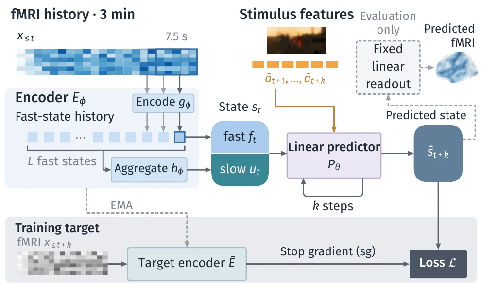
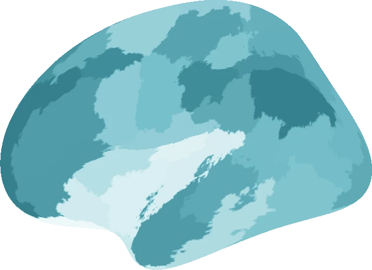
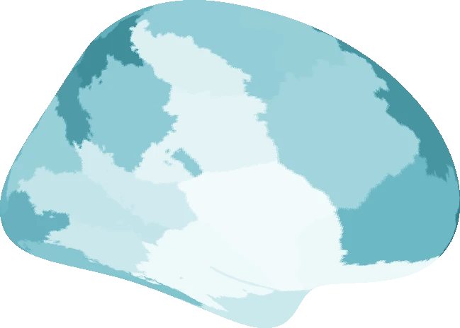

A world model of one person's brain. Spectator infers a two-timescale state from three minutes of fMRI, rolls it forward under the movie with a linear predictor, and refreshes it when new scans arrive.
Watch the same movie twice and your brain responds differently each time: the stimulus is identical, your state of mind is not. A world model of the brain should capture that. It should infer a latent state from past fMRI, predict how the state evolves as the movie plays, and update it when new scans arrive. Standard metrics cannot tell whether a model does any of this, because a model that never looks at the brain can still match the shared, stimulus-driven response.
We introduce BrainStateBench, which scores a model's latent state through a frozen linear probe on whole-cortex movie fMRI, and Spectator, a linear latent world model trained with a joint-embedding predictive objective.
What we find
- Correlation hides the state. A stimulus-only encoder reaches r = 0.320 without ever seeing the brain, yet scores 0% on State; prior brain world models reach at most 0.4%. §6 Beyond correlation ↓
- A linear world model wins on every task. Spectator scores 5.5% on State, 16.0% on Forecast and 20.3% on Updating, ahead of all six baselines, and more than doubles the best baseline on State. §5 Results ↓
- Minutes of history matter. Going from 7.5 s to 180 s of fMRI raises State fivefold (1.1% → 5.5%) while baselines plateau. The learned slow state drives the gain. §9 Ablations ↓
- State first, stimulus later. The inferred state carries 95% of a forecast 1.5 s ahead and 13% at 60 s; it helps in every cortical parcel, most in association cortex. §7 Where and when ↓
- Small, fast, and transferable. 30 M parameters, a 60 s rollout in 5.4 ms, and transfer to 184 HCP participants on a different scanner. Fast enough to run live in your browser. §8 Live simulator ↓
Matching the output does not test the state
Stimulus-only encoding models predict the response shared across viewers and keep no latent state. Prior brain world models forecast from a few seconds of fMRI or never revise their state when new data arrive. Both are judged by how well predicted fMRI matches measured fMRI, a score that mixes the shared stimulus response with the individual's internal dynamics.
World models are defined by what they do with state: infer it from observations, predict it under actions, and update it with new observations. For the brain, the stimulus plays the action, fMRI provides the observations, and the latent state is the individual's brain state.

Figure 1. Modeling and evaluating individual brain states. Left: stimulus-only models keep no latent state; prior brain world models use short histories or skip state updates. Right: Spectator infers, predicts and updates a two-timescale state, and BrainStateBench probes that state directly.
BrainStateBench: three tests of the latent state
Each model's latent state is mapped to 1,000 cortical regions by a linear probe fitted on training data and then frozen, so architectures with very different latent spaces are scored on equal footing. Every task reports variance explained (%) over a 40-step, 60 s window, on Algonauts 2025: four people watching Friends and four films, about 66 hours of fMRI.
Try each task, switch the model and the network. Every curve is measured fMRI or a model's saved forecast for one held-out query, picked as the median query by score.
Spectator: a linear latent world model
The encoder maps the last 7.5 s of fMRI to a 1,024-d fast state ft, then aggregates three minutes of fast states into a 1,024-d slow state ut with learned per-channel lag weights. A linear predictor advances st = [ft; ut] under video, audio and transcript features:
ft = Wf [xt−4; …; xt] + bffast state (last 7.5 s)ut,i = Σℓ wiℓ ft−ℓ,islow state (180 s learned lags)ŝt+1 = ŝt + W [ŝt; āt+1; 1]linear latent rolloutTraining has two stages. The encoder is pretrained on fMRI alone; then encoder and predictor are trained with a multi-step JEPA loss, matching 40-step rollouts to targets from an EMA copy of the encoder. Finally the encoder is frozen and W is solved in closed form by ridge regression.

Every forecast splits in two
Linear dynamics make every forecast an exact sum. A k-step forecast is Mkst (the inferred state carried forward) plus the accumulated stimulus drive. The curves are the two terms of the same real forecast as the hero figure (sub-01, read through the frozen probe; the probe's offset sits in the stimulus term). The shares in the bar are measured over all held-out Algonauts recordings (Fig. 3a).
Spectator leads every baseline, and the lead grows with history
We compare against six baselines in four families: stimulus-only encoders (TRIBE v2, MIRAGE), a per-lead linear forecaster, a state-space model with Kalman filtering (IPSID), and prior brain world and forecasting models (NeuroWorld, BrainVista).
BrainStateBench scores
Table 2 & Tables 11–12, interactive. Switch between Algonauts 2025 (7.5, 120, and 180 s history) and HCP 7T (184 viewers on a different 7T scanner, 180 s history; zero TRIBE v2 exposure).
More scans, better forecasts
Forecast by lead time
Updating and lead time. Left: Updating score as measured frames are revealed during the 60 s rollout. Right: Forecast at a single lead time. Spectator leads at every budget and horizon (supplementary Sec. B.2).
5-minute open-loop stability
201 steps · no scansData efficiency (10% → 100%)
Long-horizon stability and sample efficiency. Left (App. C.2): open-loop Forecast skill over five minutes without new fMRI; Spectator stays above movie-only across the full 300 s, whereas its Transformer counterpart drops below stimulus-only at 67 s and diverges below 0% at 143 s (to −473% at 5 min). Right (App. E.1): trained on just 10% of the data (4.7 h per person), Spectator already beats the full-data linear forecaster on State and Updating.
Break one input and watch which scores move
We keep the fitted Spectator and its probes fixed and change one input at test time: drop the stimulus, zero the fMRI, or feed in the fMRI of another person watching the same scene. Each perturbation leaves a different fingerprint on the three tasks. Correlation r barely notices.
Table 3 and Fig. 3b,c, interactive. One input changed at a time; thin marks show the full-input score. Rows marked "not reported" were scored on Forecast only.
Where and when state and stimulus matter
Because each forecast is an exact sum of a state term and a stimulus term, we can ask where in cortex each one helps. The stimulus drives shared sensory and narrative regions, where people respond alike. The inferred state helps everywhere, most in prefrontal and parietal association cortex, where people differ.
Forecast gain on the left hemisphere


Gain by how much people agree
Stimulus gain tracks inter-subject correlation (r = 0.92). State gain stays at 5–7 points even where people diverge, and beats the stimulus gain in 59% of the 1,000 parcels.
Figure 4. Stimuli drive shared sensory and narrative cortex; latent state helps cortex-wide. Gain from adding the stimulus to state-only forecasts, or the state to stimulus-only forecasts (100 Schaefer regions per hemisphere). Stimulus peaks: auditory, story and visual-motion regions. State peaks: cognitive control, touch and memory retrieval (labels via NeuroQuery).
A brain world model you can steer
Spectator's whole rollout is one 2,048 × 2,049 matrix–vector product per fMRI frame, so the real model runs live in your browser with no server. It starts from participant sub-01's own inferred state, after three minutes of their recorded fMRI. Choose what they watch next, and the model predicts their cortex frame by frame. Scan a frame to update the state, or swap in another person's fMRI and watch the prediction drift.
What the viewer watches
Cut to (the action)
Interact
Playback
Live readout
Live simulator. Cortex: fsaverage5 inflated surface with the Schaefer 2018 1,000-parcel, 7-network atlas, in the parcel order of the fMRI data. Drag the brain to rotate. The skill readout is the benchmark's score (1 − error / variance about the recording mean) over the last 40 frames, each frame scored before it is scanned. Footage is not shown (copyright); the screen shows how much the movie features change per frame. Built on CNeuroMod / Algonauts 2025 fMRI (CC0) and TRIBE v2 stimulus features (CC BY-NC 4.0).
The slow state, linear operators and two-stage training each matter
Removing the learned slow state costs 4.6 points of Forecast and drops State from 5.5% to 1.2%. Replacing the encoder, the predictor or both with Transformers lowers every score, and their rollouts diverge after two minutes while Spectator stays stable through five.
Change from the full model
Table 4, interactive. Change relative to the full 180 s Spectator (16.0 / 5.5 / 20.3 / 0.349), in points (Δr for correlation). Bars left of center are losses.
Common questions
Why not just report correlation like everyone else?
Correlation rewards matching the response that every viewer shares. A stimulus-only encoder ranks second on it while capturing no individual state. State, Forecast and Updating each isolate one capability: inferring the state, carrying it forward, and revising it.
How can State be exactly zero for some models?
State scores the difference between two viewings of the same film by the same person. A model that reads only the stimulus predicts identical responses for both viewings, so its predicted difference is zero and it explains none of the real one.
Why is a linear model better than Transformers here?
fMRI is slow and noisy. Predicting in a shared latent space with linear dynamics avoids fitting separate regressions to noisy targets at each lead time, keeps five-minute rollouts stable, and makes every forecast decompose exactly into state and stimulus terms. Transformer encoders and predictors scored lower on every metric in our ablations.
Is the live simulator running the real model?
Yes. It loads the frozen Spectator (transition matrix, fMRI encoder, sub-01's frozen probe) and real held-out recordings: the movie's TRIBE v2 features, precomputed into the model's stimulus drive, and the recorded fMRI of sub-01 and sub-02. A scripted session run in the browser matches the same session run in Python with the full-precision model to within 0.0005 z. The only approximation is half-precision storage.
What data did you use?
Algonauts 2025: whole-cortex fMRI (1,000 Schaefer parcels, TR 1.49 s) from four people watching Friends seasons 1–6 and four films, two of which were watched twice. For transfer, HCP movie fMRI from 184 people on a different scanner.
BibTeX
@inproceedings{stateofmind2026,
title = {State of Mind: Learning and Evaluating World Models
of Naturalistic Brain Dynamics},
author = {Anonymous},
booktitle = {Under review},
year = {2026}
}